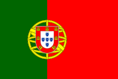
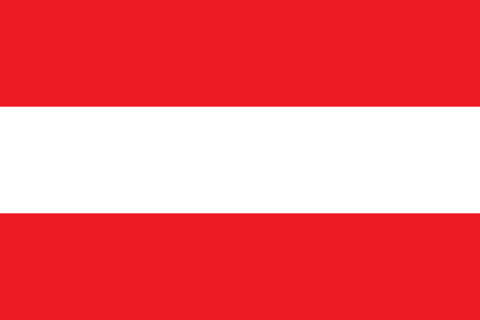
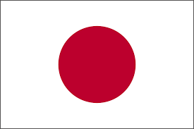

DUCATI TEAM
14-01-1997 (26 yaşında)
İtalya
YAMAHA FACTORY RACING
20-04-1999 (24 yaşında)
Fransa
DUCATI TEAM
30-12-1997 (26 yalında)
İtalya
APRILIA RACING TEAM
30-07-1989 (34 yaşında)
İspanya
REDBULL KTM RACING
18-01-1995 (28 yaşında)
Avustralya
REDBULL KTM RACING
11-08-1995 (28 yaşında)
Güney Afrika
YAMAHA FACTORY RACING
08-12-1995 (28 yaşında)
İspanya
REPSOL HONDA TEAM
16-07-1990 (33 yaşında)
Fransa
PRAMAC RACING
29-01-1998 (25 yaşında)
İspanya

APRILLA RACING TEAM
04-01-1995 (28 yaşında)
Portekiz
APRILLA RACING TEAM
12-01-1995 (28 yaşında)
İspanya

REPSOL HONDA TEAM
10-08-1997 (26 yaşında)
İtalya
| 2024 MOTOGP YARIŞ PROGRAMI | |
|---|---|
| ETKİNLİK | TARİH |
| KATAR GP | 10 * MART 03:00 |
| PORTEKİZ GP | 24 * MART 03:00 |
| ARJANTİN GP | 07 * NİSAN 03:00 |
 AMERİKA GP AMERİKA GP |
14 * NİSAN 03:00 |
 İSPANYA GP İSPANYA GP |
28 * NİSAN 03:00 |
 FRANSA GP FRANSA GP |
12 * MAYIS 03:00 |
| KATALONYA GP |
26 * MAYIS 03:00 |
 İTALYA GP İTALYA GP |
02 * HAZİRAN 03:00 |
 KAZAKİSTAN GP KAZAKİSTAN GP |
16 * HAZİRAN 03:00 |
 HOLLANDA GP HOLLANDA GP |
30 * HAZİRAN 03:00 |
 ALMANYA GP ALMANYA GP |
07 * TEMMUZ 03:00 |
 BRİTANYA GP BRİTANYA GP |
04 * AĞUSTOS 03:00 |
| AVUSTURYA GP | 18 * AĞUSTOS 03.00 |
| ARAGON GP |
01 * EYLÜL 03.00 |
 SAN MARİNO GP SAN MARİNO GP |
08 EYLÜL 03:00 |
| HOLLLANDA GP |
22 * EYLÜL 03:00 |
 ENDONEZYA GP ENDONEZYA GP |
29 * EYLÜL 03.00 |
| JAPONYA GP | 06 * EKİM 03:00 |
 AVUSTRALYA GP AVUSTRALYA GP |
20 * EKİM 03.00 |
| TAYLAND GP | 27 * EKİM 03:00 |
| MALEZYA GP | 03 * KASIM 03.00 |
| VALENSİYA GP |
17 * KASIM 03.00 |
Francesco Bagnaia, MotoGP kariyerinin hiçbir noktasında olmadığı kadar baskı hissetmesinin ardından Jorge Martin'e teşekkür etti. İkili, şampiyonluk yılın son yarışına kaldığı için son yıllardaki en yakın MotoGP şampiyonluk mücadelelerinden birini yaşadı. Bu durum Bagnaia'nın Fabio Quartararo'ya üstünlük sağladığı 2022 yılı için de geçerliydi. Ancak sprint yarışlarının denkleme girmesi bu yılki mücadeleyi daha da çekişmeli hale getirdi. Bagnaia, bireysel hatalar yapmasına rağmen, Martin tarafından kendisine uygulanan baskıdan keyif aldığını itiraf etti. MotoGP.com'a konuşan İtalyan pilot, "Baskı bir ayrıcalıktır. Bu his olmadan, bundan zevk alamazsınız." "Kazanmak ya da kaybetmek farklı bir baskı yaratabilir ve bu harika bir şey." "Bu mümkün olan en iyi şey. Jorge'ye teşekkür etmek istiyorum. Çünkü bu duyguyu daha fazla hissetmeme yardımcı oldu." dedi. 2018-19'da Marc Marquez'den bu yana ilk kez arka arkaya MotoGP şampiyonu olan Bagnaia, önümüzdeki yıl daha da zorlu bir mücadele bekliyor. Bunun nedenlerinden biri, altı kez dünya şampiyonu olan Marc Marquez'in Valencia testini dördüncü sırada tamamlamasının ardından şimdiden heyecan verici olduğunu kanıtlayan Ducati'ye katılması. Bagnaia, "2024 daha zor olacak. Gelecek yıl Ducati ile Marc olacak, Bezzecchi olacak,belki Yamaha ile Quartararo olacak, Ducati ile Morbidelli olacak ve KTM'leri de unutamayız." dedi.
Marc Marquez, Honda MotoGP takımının hayatımın takımı olacağını söyledi ve bir gün geri dönme konusunda kapıları asla kapatmak istemediğini bir kez daha yineledi. Sekiz kez grand prix dünya şampiyonu olan İspanyol sürücü, kötü geçen >2023 sezonunun ardından sözleşmesinin bitmesine bir yıl kala Honda'dan ayrılarak gelecek sezon için Gresini Ducati'ye imza attı. Marquez, 2013'teki ilk yarışından itibaren MotoGP kariyerinin her yılında Honda ile yarıştı ve birlikte altı premier sınıf şampiyonluğu kazandılar ve 59 galibiyet elde ettiler. Honda'dan ayrılacağını açıkladığından beri, Marquez bir gün geri dönme ihtimaline kendini asla kapatmadı. Ancak Valencia'daki testte bunun sadece 'kendi' kararı olmayacağını kabul etti. Üreticideki koşulların iyileşmesi halinde Honda'ya dönmenin kendisi için bir düşünce olup olmadığı sorulduğunda Marquez,"Kapıları asla kapatmak istemiyorum." "Geçmişte bazı röportajlarda söyledim ve yine söyleyeceğim. Honda ile ilişkimiz inanılmazdı ve yolculuklarımızı değiştirmeye, ilişkimizi bitirmeye karar verdiğimizde, her iki taraf da kabul ettiği için oldu." "Buna tamamen saygı duyuyoruz. Çünkü durumu çok kritik bir hale sokmak istemiyorum. Honda'ya kapıyı açık tutmayı seviyorum." "Ben diyorum ki, belki diğer üreticiler duymak istemeyecek ama Honda benim hayatımın, kariyerimin takımı olacak." "Altı dünya şampiyonluğu ve birçok zafer elde ettim. Bu sayılara başka bir üreticiyle ulaşamayacağım." "Honda her zaman kalbimdeki en özel takım olacak. Ama geleceğimizin tekrar kesişip kesişmeyeceğinizi göreceğiz. Bu sadece benim kararım olmayacak." dedi. Joan Mir, sezonun ardından Valencia testine getirilen 2024 Honda'dan övgüyle bahsederek, RC213V'de ilk kez gerçekten işe yarayan bir şey denediğini belirtti. Marquez Valencia'daki testte Ducati ile ilk kez piste çıktı ve testi dördüncü sırada liderin sadece 0.171 saniye arkasında tamamladı.
Her iki sürücünün de Honda ve Red Bull'un gücüyle birçok dünya şampiyonluğuna ulaşmış olmalarının yanı sıra, Max Verstappen ve Marc Marquez'in daha fazla ortak noktası var: zihniyetleri. MotoGP'de Marc Marquez çok genç bir sürücü olarak başarıları bir araya getirirken, daha da genç olan Max Verstappen Formula 1'de büyük bir ün kazandı. Marquez Red Bull'un desteğiyle Honda'nın fabrika takımında yarışırken, Verstappen Honda'nın motor desteğiyle Red Bull'da yarışıyor. Yani bir anlamda kariyerleri paralellik gösteriyor ve her iki isminde de başarıları yadsınamaz. Birbirlerine yabancı olmayan ikili, zaman zaman Red Bull ve/veya Honda'nın ortak etkinliklerinde karşılaşıyorlar. Marc Marquez'in RacingNews365'e verdiği özel röportajda Max Verstappen ile aynı zihniyete sahip olduğu için Hollandalı ismi sevdiğini söyledi. Marquez, "Çoğunlukla gerçek bir katil olduğu için Max Verstappen'i çok seviyorum." Bu sözünü açıklayan Marquez, "Kazanmak, başarılı olmak ya da kahraman olmak için aynı zamanda bir katil olmanız gerekir. Bu ne anlama geliyor? Tek bir kutsal hedef dışında hiçbir şey umurunuzda değil. O da kazanmak." "Bu hedefe nasıl ulaştığınız ve aslında nasıl kazandığınız gerçekten önemli değil. Onun ilk önceliği kazanmak ve bu açıdan aynı zihniyete sahibiz. Bu nedenle onu gerçekten çok seviyorum," dedi.